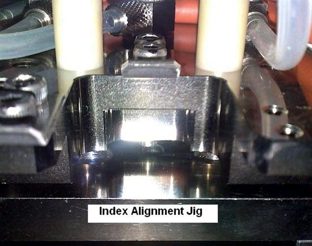
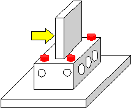

Service History
Subject: NS-8040 Index Arm 2 Alignment Out
Handler Model: NS-8040 S/N: 151245 (NS-103)
Controller: RC520
Date: 17~18 Dec 2009
Symptom
Unwrap and setup handler(Pre-installed with HMI F9.13-SIS (FD09S111)).
Dry run ok.
After WLWFB183 Quad site changekit mounted(this is a repeated kit, number 7 set),
1) For Index Arm 2, nest cannot go into the input shuttle 2, only touching surface on input shuttle 2.
There was an offset in the -X direction for shuttle using Index Arm 2 as reference.
2) When Index Arm 2, goes into the socket guide base jig, the contactor with nest was seen being pushed to the -X direction when the Index Arm 2 goes into the socket guide base jig.
For Index Arm 1, it seem ok.
We suspect that the Index Arm 2 need to be align mechanically.
Will bring the NS-8040 Index Arm Alignment jig tomorrow morning to Infineon to verify whether there is a position offset in the +Y direction for the Index Arm 2.
Action
1) Index Arm 2 alignment check using Index Arm Alignment jig.
Index Arm 2 guide pin cannot go into the alignment jig, Index Arm 2 misalignment with offset about 1 mm in the +Y direction with alignment jig as reference.

2) Index Arm 1 alignment check, ok.
3) Lossen 4 bolts above Index Arm 2 to alignment with the Index Arm Alignment jig. Tighten 4 bolts after alignment and check.

4) Dry run with WLWFB183 Quad site and dummy devices, ok.
Cause
Index Arm 2 Alignment out.